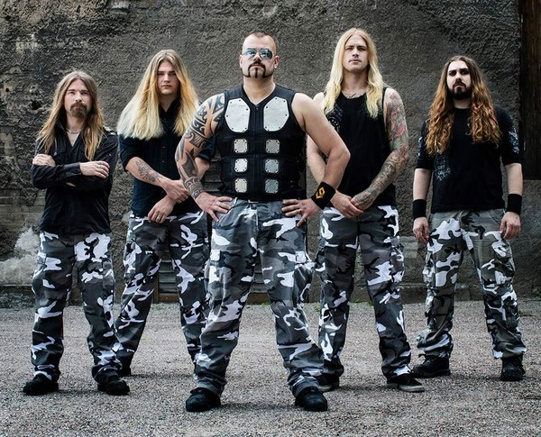
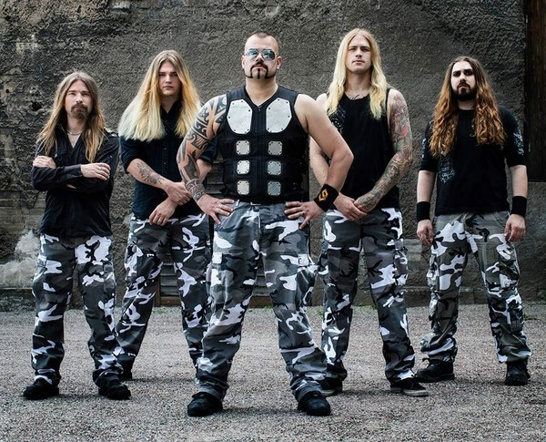

О группе
Sabaton — шведская метал-группа, основанная в 1999 году. Известна своими песнями, посвящёнными военной тематике и историческим событиям.
Sabaton — шведская метал-группа, основанная в 1999 году. Известна своими песнями, посвящёнными военной тематике и историческим событиям.
